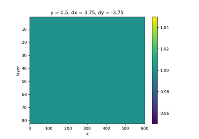
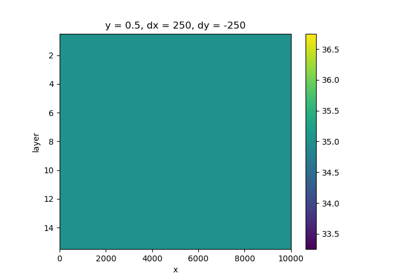
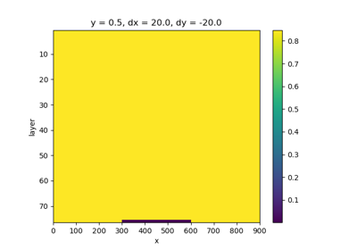
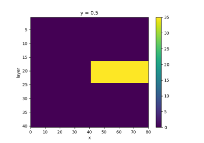
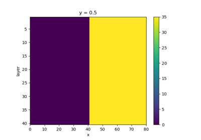

iMOD-WQ#
These examples demonstrate how to use imod to build iMOD-WQ models.

Elder

Freshwater Lens


Hydrocoin

Saltwater Pocket

Vertical Interface
These examples demonstrate how to use imod to build iMOD-WQ models.